Slide 2 — Performance Evaluation และ Stationary Time Series · 34 หน้า · คลิป Class 2 · Exercise 1
สองเรื่องในบทนี้ดูไม่เกี่ยวกัน แต่เป็นคำถามแรกที่ต้องตอบก่อนสร้างโมเดลใดก็ตาม
วิธีอ่าน: ข้อความไฮไลต์สีเหลืองคือข้อความที่ใส่สีไว้บนสไลด์ ตัวเลขยกเล็กท้ายประโยค1 คือที่มาจากคลิป (คลาสและนาที) รวมไว้ที่ท้ายบท ท้ายบทรวมโจทย์จาก Exercise 1 ที่แจกในวิชาไว้ด้วย
| หัวข้อ | เนื้อหา | สไลด์ |
|---|---|---|
| 1 | ทำไมต้องวัดความแม่นยำ และ overfitting | 2–4 |
| 2 | แบ่งข้อมูลอย่างไร: fixed และ roll-forward | 5–12 |
| 3 | ตัววัด error ห้าตัว และการคำนวณจากตาราง | 13–17 |
| 4 | Stationarity คืออะไร และทำไมสำคัญ | 19–23 |
| 5 | Strictly stationary | 24–29 |
| 6 | Weakly stationary และวิธีตรวจ | 30–32 |
| 7 | ตัวอย่างตรวจ stationarity สามข้อ | 33 |
| 8 | Exercise บนสไลด์ และโจทย์จาก Exercise 1 | 34 |
| 9 | ข้อสอบเก่าที่ออกจากบทนี้ และแม่แบบคำตอบ | — |
| 10 | แบบฝึกห้าแบบ | — |
จะรู้ได้อย่างไรว่าโมเดลพยากรณ์ยอดขายใช้ได้ วิธีตรงที่สุดคือรอเดือนหน้าแล้วเทียบ สมัยก่อนต้องทำแบบนั้น แต่ปัจจุบันข้อมูลมีมากพอ จึงแบ่งข้อมูลส่วนหนึ่งออกมาแกล้งทำเป็นอนาคต แล้ววัดว่าโมเดลทายส่วนนั้นได้ใกล้แค่ไหน9 หัวข้อนี้และหัวข้อถัดไปคือวิธีทำให้ถูกต้อง
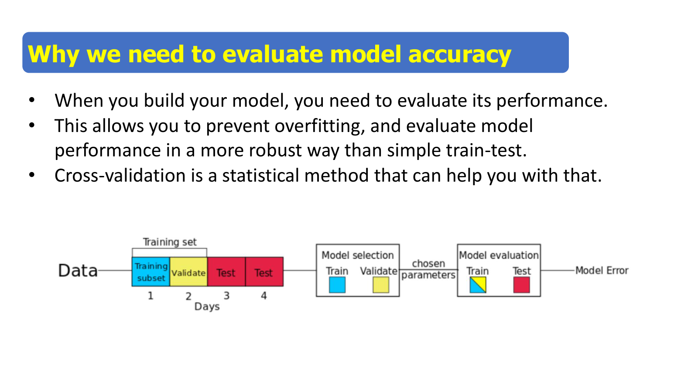
ต้องประเมินโมเดลเพื่อกันปัญหา overfitting และให้การประเมินน่าเชื่อถือกว่าการแบ่งครั้งเดียว แผนภาพแบ่งข้อมูลสี่วัน
เปรียบได้กับการเตรียมสอบ ฝึกทำโจทย์ชุดหนึ่ง ลองอีกชุดเพื่อปรับวิธีอ่าน แล้วจึงวัดผลจริงด้วยข้อสอบที่ไม่เคยเห็น
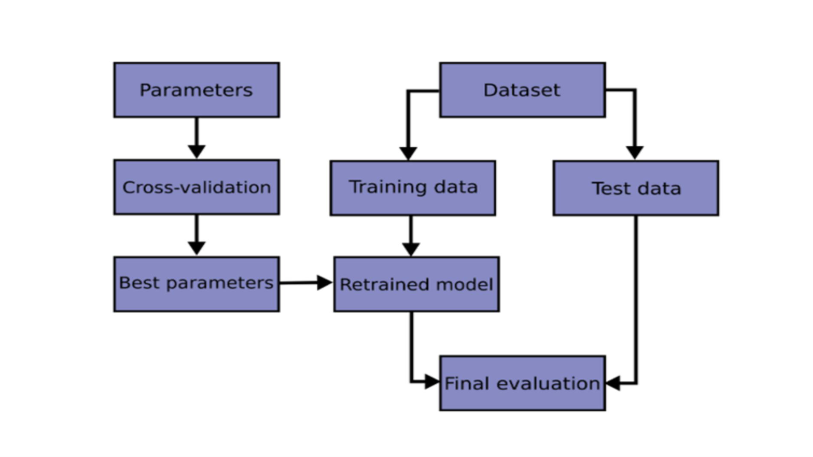
ลำดับงานมีสี่ขั้น
ถ้าเอา test มาช่วยเลือกพารามิเตอร์ ผลที่วัดได้จะดีเกินจริง เพราะโมเดลถูกปรับให้เข้ากับข้อมูลชุดนั้นไปแล้ว
ในวิชานี้ทำให้ง่ายลง
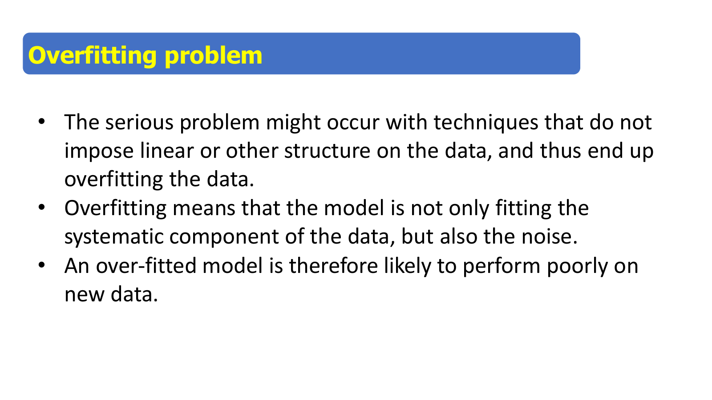
Overfitting คือโมเดลที่จำทั้งส่วนที่เป็นระบบ (systematic) คือ trend และ seasonal ตามภาษาของ Lesson 1 และส่วนที่เป็น noise แต่ noise ไม่ซ้ำในอนาคต โมเดลที่จำ noise จึงทำงานแย่กับข้อมูลใหม่ เหมือนนักเรียนที่ท่องเฉลยข้อสอบเก่าได้ทุกข้อ ได้เต็มเมื่อสอบชุดเดิม แต่ทำชุดใหม่ไม่ได้ ดังนั้นต้องวัด error บนข้อมูลที่โมเดลไม่เคยเห็น error บน train บอกแค่ว่าโมเดลจำเก่ง ไม่ได้บอกว่าพยากรณ์เก่ง
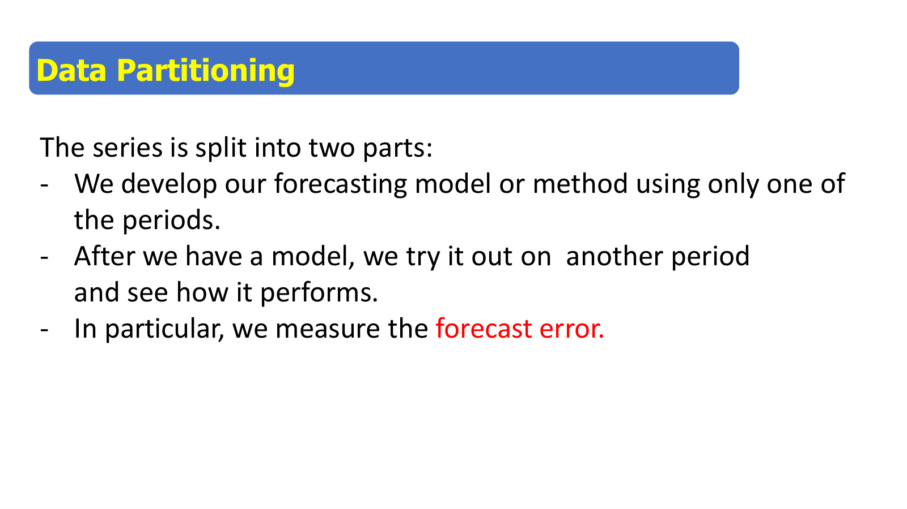
หลักการคือตัดอนุกรมเป็นสองช่วง ช่วงหนึ่งพัฒนาโมเดล อีกช่วงทดสอบ สิ่งที่วัดคือ forecast error (นิยามในหัวข้อ 3) เพราะไม่มีมาตรวัดความแม่นยำโดยตรง13
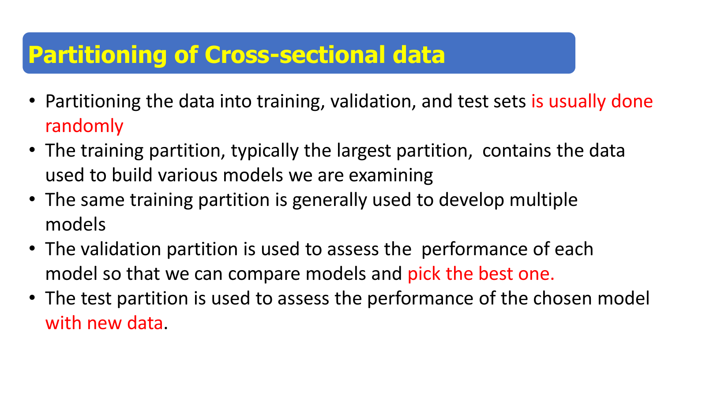
ข้อมูล cross-sectional แบ่งเป็นสามส่วน โดย is usually done randomly คือสุ่มเลือกแถว ซึ่งทำได้เพราะแถวเป็นอิสระต่อกัน14
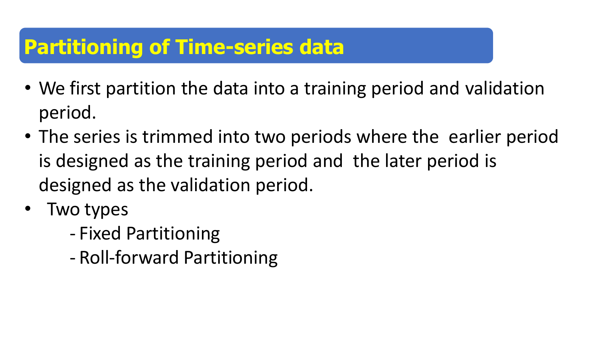
อนุกรมเวลาห้ามสุ่ม เพราะข้อมูลมีลำดับ15 ถ้าสุ่ม ปี 2003 อาจไปอยู่ใน train ขณะที่ปี 2001 อยู่ใน test ซึ่งเท่ากับใช้อนาคตทายอดีต งานจริงไม่มีข้อมูลอนาคตให้ใช้ การแบ่งจึงต้องเลียนแบบสถานการณ์จริง คือช่วงต้นเป็น train ช่วงท้ายเป็น test มีสองแบบคือ fixed และ roll-forward
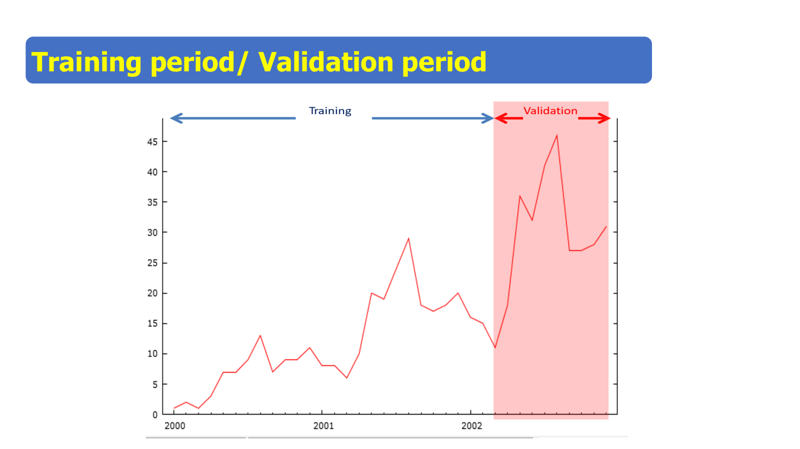
Fixed partitioning ตัดครั้งเดียว เช่น 80% แรกเป็น train และ 20% ท้ายเป็น test แล้วเทียบเส้นพยากรณ์กับค่าจริงในช่วง test16
ข้อเสียคือได้ error ค่าเดียว ถ้าช่วง test บังเอิญผิดปกติ ผลก็ผิดปกติตาม
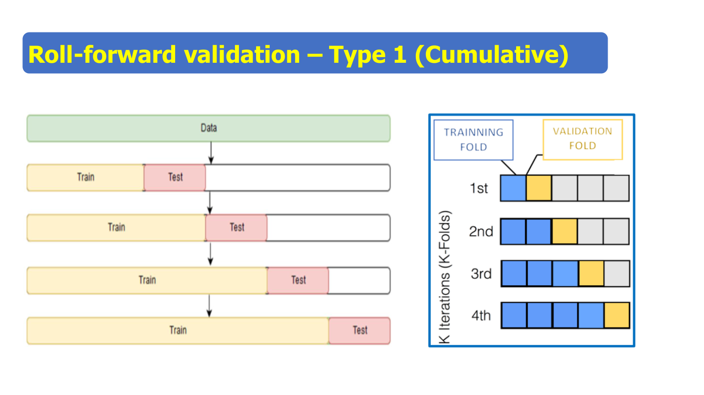
Roll-forward แบ่งหลายรอบ เป็นแบบที่งาน IS และ thesis ใช้17 แบบสะสม (cumulative):
ได้ error สี่ค่ามาเฉลี่ย ซึ่งน่าเชื่อถือกว่าการตัดครั้งเดียว
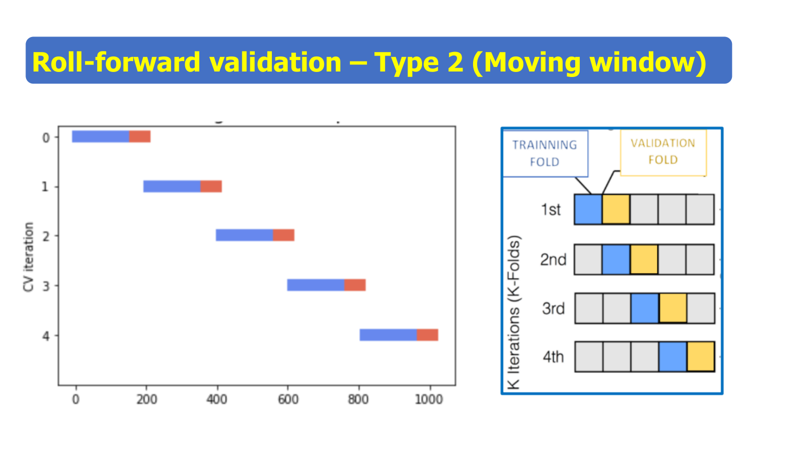
แบบหน้าต่างเลื่อน (moving window) ขนาดของ train และ test คงที่ แต่เลื่อนไปทางขวาทุกรอบ ข้อมูลเก่าที่หลุดหน้าต่างถูกทิ้ง ในข้อมูล 1,000 จุด รอบแรก train ราวจุดที่ 0–150 test ราว 150–210 รอบสุดท้าย train ราว 800–960 เหมาะเมื่ออดีตไกล ๆ ไม่เกี่ยวกับปัจจุบันแล้ว เช่น ตลาดที่โครงสร้างเปลี่ยนหลังเหตุการณ์ใหญ่18
| Type 1 Cumulative | Type 2 Moving window | |
|---|---|---|
| จุดเริ่มของ train | จุดเดิมทุกรอบ | เลื่อนไปทุกรอบ |
| ความยาวของ train | ยาวขึ้นทุกรอบ | คงที่ |
| ข้อมูลเก่า | เก็บไว้ทั้งหมด | ทิ้งไป |
| ตำแหน่งของ test | ถัดจาก train ทันที ทั้งสองแบบ | |
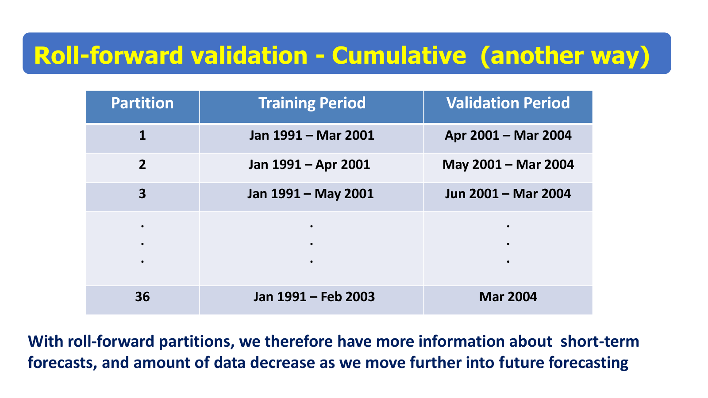
อีกวิธีของแบบสะสม: train เริ่มที่ Jan 1991 ทุกรอบ และจบที่ Mar 2001, Apr 2001, … ไปจนถึง Feb 2003 รวม 36 รอบ ส่วน test คือทุกเดือนที่เหลือจนถึง Mar 2004 รอบแรกมี test 36 เดือน รอบที่สองมี 35 เดือน รอบสุดท้ายมีเดือนเดียว เขียนด้วย for loop และได้เห็นตั้งแต่การพยากรณ์ระยะยาวถึงระยะสั้น19
ผลคือการพยากรณ์ล่วงหน้า 1 เดือนมีให้วัด 36 ครั้ง แต่ล่วงหน้า 36 เดือนมีให้วัดครั้งเดียว ตรงกับข้อความบนสไลด์ With roll-forward partitions, we therefore have more information about short-term forecasts, and amount of data decrease as we move further into future forecasting
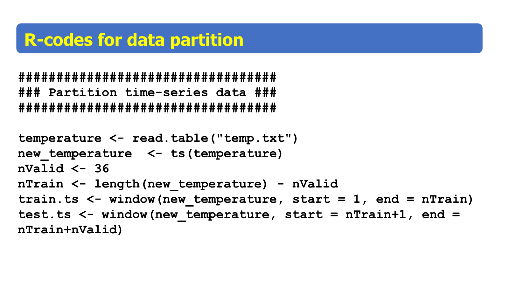
โค้ดนี้ทำ fixed partitioning กับข้อมูลอุณหภูมิโลก temp.txt ข้อมูลมี 142 ปี (1856–1997) กัน 36 ปีท้ายไว้เป็น test จึงเหลือ train 106 ปี (1856–1961) และ test คือปี 1962–199720 คำสั่ง ts() สำคัญมาก ถ้าไม่ใส่ R จะถือเป็นข้อมูล cross-sectional21
temperature <- read.table("temp.txt")
new_temperature <- ts(temperature, start = 1856)
nValid <- 36
nTrain <- length(new_temperature) - nValid
train.ts <- window(new_temperature, start = 1856, end = 1856 + nTrain - 1)
test.ts <- window(new_temperature, start = 1856 + nTrain, end = 1856 + nTrain + nValid - 1)| โค้ด | ทำอะไร | ค่าที่ได้กับ temp.txt |
|---|---|---|
| read.table("temp.txt") | อ่านไฟล์ข้อความเป็นตาราง | 142 แถว |
| ts(temperature, start = 1856) | บอก R ว่าเป็นอนุกรมรายปี เริ่มปี 1856 ถ้าไม่ใส่ start แกนเวลาจะเป็น 1, 2, 3 | 1856–1997 |
| nValid <- 36 | จำนวนจุดท้ายที่กันไว้เป็น test | 36 |
| nTrain <- length(...) - nValid | จำนวนจุดที่เหลือเป็น train | 142 − 36 = 106 |
| window(..., start, end) | ตัดช่วงตามเวลา จึงรักษาลำดับไว้ | train 1856–1961, test 1962–1997 |
ไฟล์ R ของวิชามีสามแบบที่ให้ผลเดียวกัน
ts(temperature) โดยไม่ใส่ปี แล้วตัดด้วยลำดับ start = 1, end = nTrainc(1856, nTrain)ข้อควรระวัง: ถ้าใส่ start = 1856 ใน ts() แล้วไปตัดด้วย start = 1, end = 106 R จะเตือน 'start' value not changed แล้วหยุดด้วย error 'start' cannot be after 'end' เพราะเวลา 1 ถึง 106 อยู่ก่อนปี 1856 ทั้งหมด
ให้ \(Y_t\) เป็นค่าจริง และ \(F_t\) เป็นค่าพยากรณ์ error ของแต่ละจุดคือ \(e_t=Y_t-F_t\) (ค่าจริงลบค่าพยากรณ์) ก่อนเข้าสูตรมีหลักสองข้อ
ไม่ต้องจำสูตร ให้ดูจากชื่อ24 เช่น Root Mean Square Error อ่านจากหลัง
จึงได้ \(\sqrt{\text{mean}((Y-F)^2)}\) ส่วน Mean Absolute Percentage Error คือ error หารค่าจริงเป็นเปอร์เซ็นต์ ใส่ค่าสัมบูรณ์ แล้วเฉลี่ย
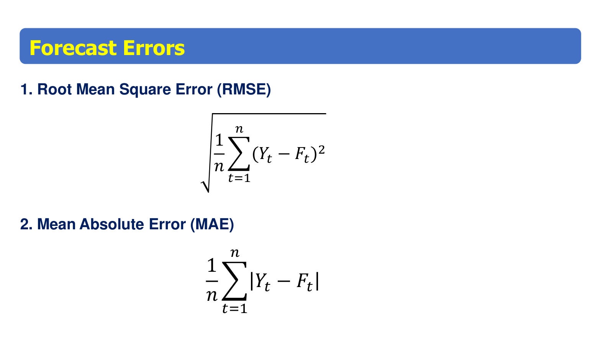
สองตัวแรกมีหน่วยเดียวกับข้อมูล
RMSE ยกกำลังสองก่อน error ใหญ่จึงถูกขยายมาก เช่น error 8 กลายเป็น 64 ขณะที่ error 1 ยังเป็น 1 ส่วน MAE ให้น้ำหนักตามขนาดจริง RMSE จึงมากกว่าหรือเท่ากับ MAE เสมอ ถ้า RMSE ห่างจาก MAE มาก แปลว่ามี error ใหญ่บางจุดปนอยู่
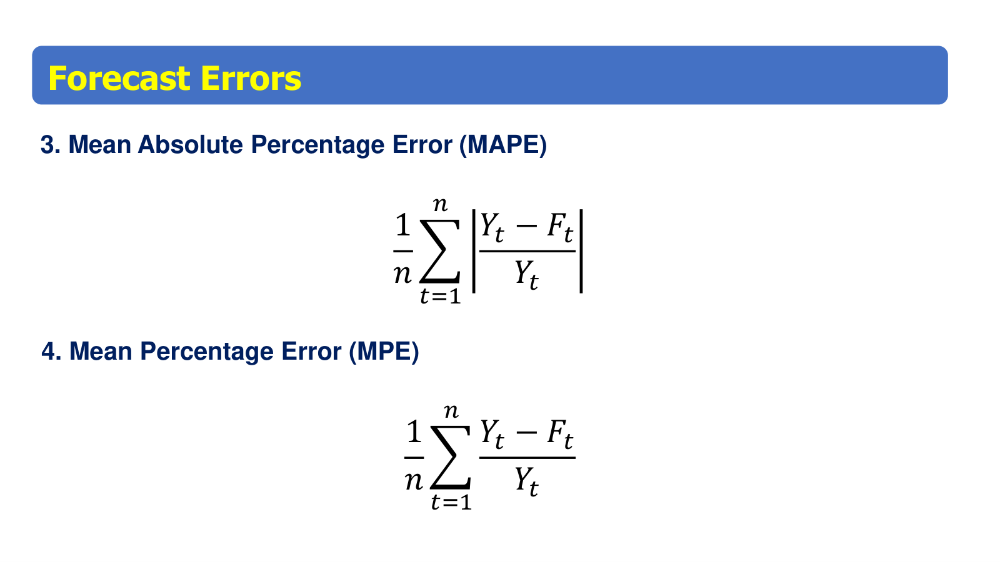
ตัวที่สามและสี่หาร error ด้วยค่าจริง จึงเป็นเปอร์เซ็นต์และไม่มีหน่วย
ธุรกิจใช้ MAPE มากเพราะเข้าใจง่าย หารด้วยค่าจริง ไม่ใช่ค่าพยากรณ์ ข้อเสียคือ ถ้าค่าจริงเป็น 0 หรือใกล้ 0 MAPE จะพุ่งเป็นอนันต์25 เช่น ข้อมูลกำไรที่บางเดือนเกือบเป็น 0 หรือติดลบ ใช้ MAPE ไม่ได้
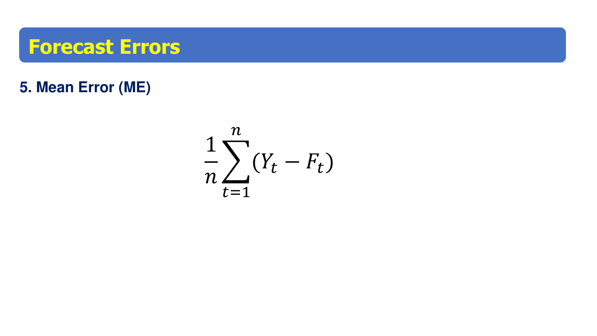
ตัวสุดท้ายคือ 5. Mean Error (ME) \(=\tfrac1n\sum(Y_t-F_t)\) เพราะ error คือค่าจริงลบค่าพยากรณ์
| ตัววัด | จัดการ error อย่างไร | บอกทิศของความเอนเอียง | มีหน่วยของ Y | ข้อควรระวัง |
|---|---|---|---|---|
| RMSE | ยกกำลังสอง เฉลี่ย ถอดราก | ไม่ | มี | ไวต่อ error ใหญ่ |
| MAE | ค่าสัมบูรณ์ แล้วเฉลี่ย | ไม่ | มี | — |
| MAPE | หารด้วย Y ค่าสัมบูรณ์ เฉลี่ย | ไม่ | ไม่มี (%) | ใช้ไม่ได้เมื่อ Y ใกล้ 0 |
| MPE | หารด้วย Y เฉลี่ย | บอก | ไม่มี (%) | บวกลบหักล้างกัน |
| ME | เฉลี่ยตรง ๆ | บอก | มี | บวกลบหักล้างกัน |
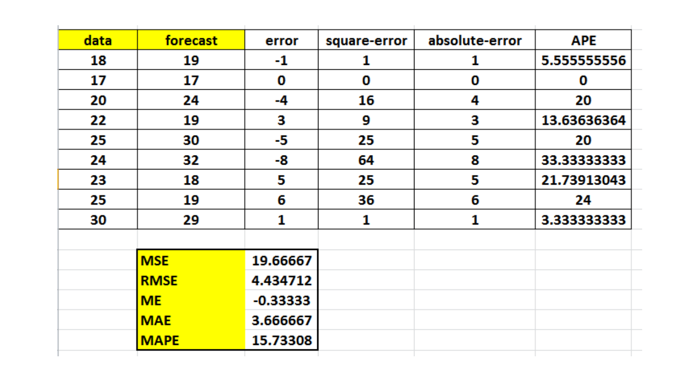
ตารางนี้มาจากไฟล์ Forecast Error Example ของวิชา27
MAPE 15.73% อ่านว่าโดยเฉลี่ยคลาดบวกลบราว 15% การ์ดต่อไปนี้คำนวณทุกค่าทีละคอลัมน์
| Y | F | e = Y − F | e² | |e| | |e| ÷ Y × 100 |
|---|---|---|---|---|---|
| 18 | 19 | −1 | 1 | 1 | 5.556 |
| 17 | 17 | 0 | 0 | 0 | 0 |
| 20 | 24 | −4 | 16 | 4 | 20.000 |
| 22 | 19 | 3 | 9 | 3 | 13.636 |
| 25 | 30 | −5 | 25 | 5 | 20.000 |
| 24 | 32 | −8 | 64 | 8 | 33.333 |
| 23 | 18 | 5 | 25 | 5 | 21.739 |
| 25 | 19 | 6 | 36 | 6 | 24.000 |
| 30 | 29 | 1 | 1 | 1 | 3.333 |
| ผลรวม | −3 | 177 | 33 | 141.598 | |
\(-3/9=-0.3333\) โดยเฉลี่ยพยากรณ์สูงกว่าค่าจริงเล็กน้อย
\(177/9=19.6667\) และ \(\sqrt{19.6667}=4.4347\)
\(33/9=3.6667\)
\(141.598/9=15.733\%\)
ใส่เครื่องหมายตาม e: \((-5.556+0-20+13.636-20-33.333+21.739+24+3.333)/9=-16.181/9=-1.80\%\)
อ่านผลรวมกัน
ในงานจริงให้เลือกตัววัดหนึ่งหรือสองตัว นิยม MSE กับ MAPE ผลที่ดีที่สุดคือทุกตัวชี้ไปทางเดียวกัน แต่บางครั้งไม่ตรงกัน เช่น โมเดลหนึ่ง MSE ต่ำสุดแต่ MAPE ไม่ต่ำสุด28
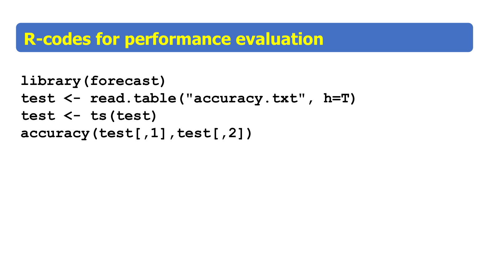
ใน R ฟังก์ชัน accuracy() ของ package forecast ให้ทุกตัววัดในคำสั่งเดียว ไฟล์ accuracy.txt มีสองคอลัมน์ คือ data (ค่าจริง) และ forecast (ค่าพยากรณ์) ตรงกับตาราง Excel ข้างบน29
ฟังก์ชัน accuracy(f, x) รับค่าพยากรณ์ก่อนแล้วจึงรับค่าจริง (f คือ forecast, x คือค่าจริง) แต่โค้ดบนสไลด์ส่ง test[,1] ซึ่งเป็นค่าจริงเข้าไปเป็นตัวแรก ผลจึงสลับบทบาทกัน
> accuracy(test[,1], test[,2]) # ตามสไลด์: ค่าจริงอยู่ตำแหน่ง forecast
ME RMSE MAE MPE MAPE
Test set 0.3333333 4.434712 3.666667 -1.666443 15.799
> accuracy(test[,2], test[,1]) # ลำดับที่ถูก: forecast ก่อน ค่าจริงหลัง
ME RMSE MAE MPE MAPE
Test set -0.3333333 4.434712 3.666667 -1.797785 15.73308
accuracy() ให้ตรวจว่าค่าพยากรณ์อยู่ตำแหน่งแรกlibrary(forecast)
test <- read.table("accuracy.txt", h = T)
test <- ts(test)
accuracy(test[,2], test[,1]) # forecast ก่อน ค่าจริงหลัง| โค้ด | ทำอะไร |
|---|---|
| library(forecast) | เรียก package forecast ซึ่งมีฟังก์ชัน accuracy |
| read.table("accuracy.txt", h = T) | h = T คือบรรทัดแรกเป็นชื่อคอลัมน์ (data, forecast) |
| ts(test) | แปลงเป็นอนุกรมเวลา |
| test[,1], test[,2] | คอลัมน์ที่ 1 (ค่าจริง) และคอลัมน์ที่ 2 (ค่าพยากรณ์) |
| accuracy(f, x) | คำนวณ ME, RMSE, MAE, MPE, MAPE จาก error = x − f |
คำถามหลักของวิชาคืออนุกรมเวลานิ่งหรือไม่30 ปัญหาตั้งต้นคือ Lesson 1 พบว่าแต่ละจุดเวลาเป็นตัวแปรสุ่มคนละตัว แต่ข้อมูลจริงมีค่าเดียวต่อเวลา ถ้าแต่ละเวลามีค่าเฉลี่ยและความแปรปรวนต่างกันหมด จะประมาณค่าเหล่านั้นจากข้อมูลค่าเดียวไม่ได้ ทางออกคือหาอนุกรมที่ "กติกาไม่เปลี่ยนตามเวลา" ข้อมูลทุกจุดจึงช่วยกันประมาณค่าชุดเดียวกันได้ อนุกรมแบบนั้นเรียกว่า stationary
นิ่งคือ distribution ไม่เปลี่ยนตามเวลา อนุกรมที่ไม่นิ่งมีสามแบบ31
กลยุทธ์ของทั้งวิชาสรุปได้ในประโยคเดียว: อนุกรมส่วนใหญ่ไม่ stationary จึงดึงส่วนที่ไม่นิ่งออกก่อน เอาส่วนที่นิ่งไปสร้างโมเดล แล้วค่อยปรับกลับทีหลัง33
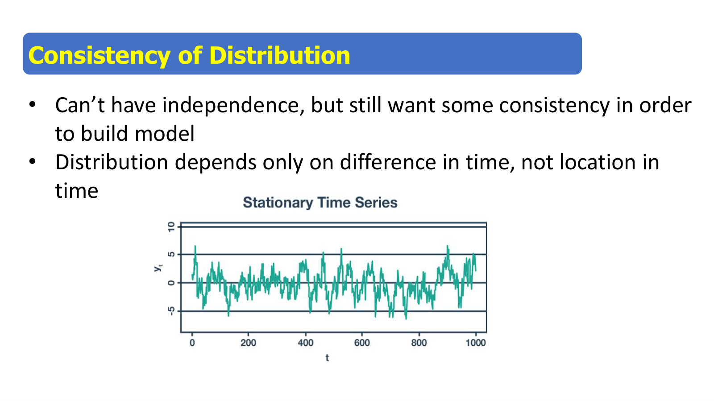
เมื่อค่าที่อยู่ติดกันสัมพันธ์กัน จึงไม่มีความเป็นอิสระ แล้วอะไรที่ยังคงที่ให้ยึดได้ คำตอบคือการแจกแจงต้องขึ้นกับ ระยะห่างของเวลา เท่านั้น ไม่ขึ้นกับ ตำแหน่งของเวลา ความสัมพันธ์ระหว่างสองค่าที่ห่างกัน 3 ช่วงต้องเหมือนกัน ไม่ว่าอยู่ต้นหรือปลายข้อมูล กราฟ 1,000 จุดนี้แกว่งรอบ 0 ระหว่าง −5 ถึง 5 ตลอด ตัดช่วง 0–200 มาเทียบกับ 800–1,000 ระดับกลางและความกว้างเท่ากัน
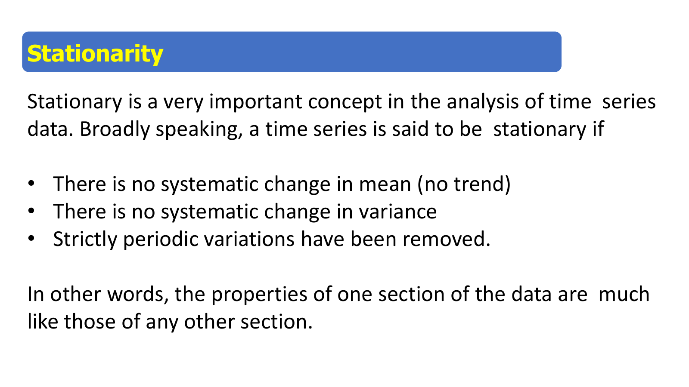
นิยามแบบกว้างมีสามข้อ ตรงกับอนุกรมไม่นิ่งสามแบบข้างบน
เปรียบได้กับเกมทอยลูกเต๋าที่กติกาไม่เปลี่ยน ผลแต่ละตายังสุ่ม แต่ลูกเต๋าเป็นลูกเดิมตลอด สถิติของ 100 ตาแรกจึงคล้ายของ 100 ตาสุดท้าย
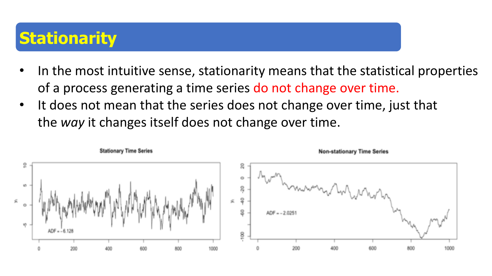
Stationarity หมายความว่าสมบัติทางสถิติของ process do not change over time. ไม่ได้แปลว่าข้อมูลไม่เปลี่ยน แต่แปลว่า "วิธีที่มันเปลี่ยน" ไม่เปลี่ยน
| กราฟ | ลักษณะ | ADF | สรุป |
|---|---|---|---|
| แรก | แกว่งรอบ 0 ระหว่าง −5 ถึง 5 ตลอดช่วง ค่าเปลี่ยนตลอดแต่ลักษณะการเปลี่ยนเหมือนเดิม | −6.128 | นิ่ง |
| ที่สอง | ลดจาก 0 ลงไปราว −100 ที่เวลาประมาณ 850 แล้วกลับขึ้นมาราว −55 ระดับเฉลี่ยเปลี่ยนตามช่วงเวลา | −2.0251 | ไม่นิ่ง |
ADF คือการทดสอบ Augmented Dickey-Fuller ค่าที่ติดลบมากสนับสนุนว่านิ่ง สอนใน Lesson 3
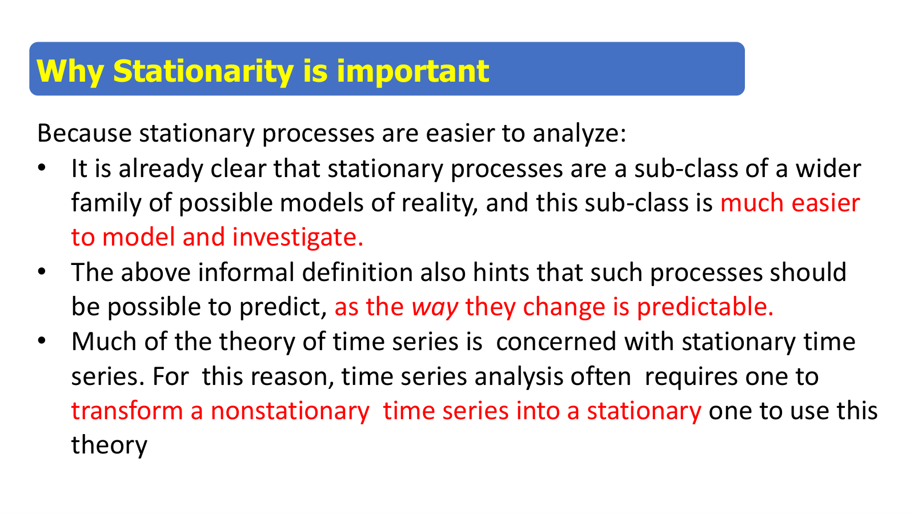
เหตุผลสามข้อบนสไลด์
เหตุผลเชิงปฏิบัติตรงกับย่อหน้าแรกของหัวข้อนี้: เมื่อกติกาไม่เปลี่ยน ข้อมูลทุกจุดช่วยกันประมาณค่าเฉลี่ยและ covariance ชุดเดียวกันได้
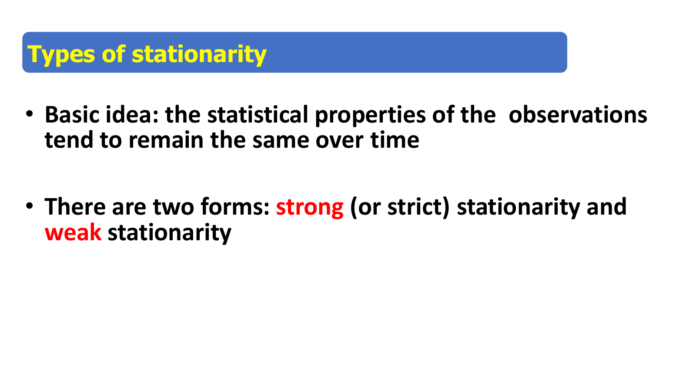
Stationarity มีสองแบบ หัวข้อ 5 และ 6 อธิบายทีละแบบ
แบบเข้มพิสูจน์ยาก จึงข้ามในห้องและไม่ใช่จุดที่จะออกให้พิสูจน์35 แต่ต้องรู้นิยาม และรู้ว่าทำไมต้องหันไปใช้แบบอ่อน
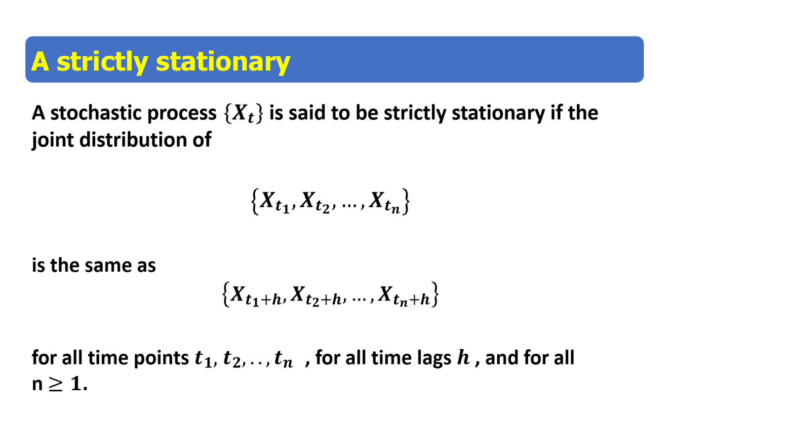
\(\{X_t\}\) เป็น strictly stationary ถ้าการแจกแจงร่วมของ \((X_{t_1},\dots,X_{t_n})\) เหมือนกับของ \((X_{t_1+h},\dots,X_{t_n+h})\) สำหรับทุกชุดของเวลา ทุก h และทุก n คือหยิบจุดเวลากี่จุดก็ได้ แล้วเลื่อนทั้งชุดไป h ช่วง การแจกแจงร่วมต้องเหมือนเดิมทุกประการ เช่น \((X_1,X_3)\), \((X_{11},X_{13})\) และ \((X_{101},X_{103})\) ต้องมีการแจกแจงร่วมเดียวกัน
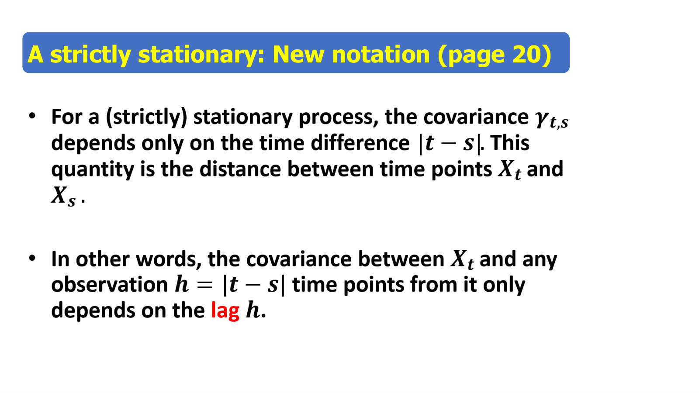
เมื่อ process นิ่ง covariance \(\gamma(s,t)\) ขึ้นกับระยะห่าง \(|t-s|\) เท่านั้น ระยะห่างนี้เรียกว่า lag เขียนว่า h สัญกรณ์สองตัวห้อยจึงย่อเหลือตัวเดียว เพราะรู้ระยะห่างก็รู้ค่า ไม่ต้องรู้ว่าอยู่ที่เวลาใด ตรงกับการเขียนด้วย lag ใน Lesson 1 หัวข้อ 8
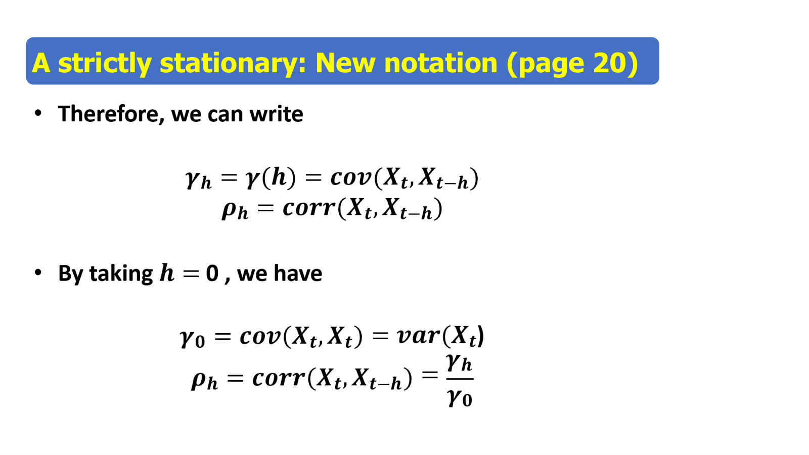
สัญกรณ์ใหม่
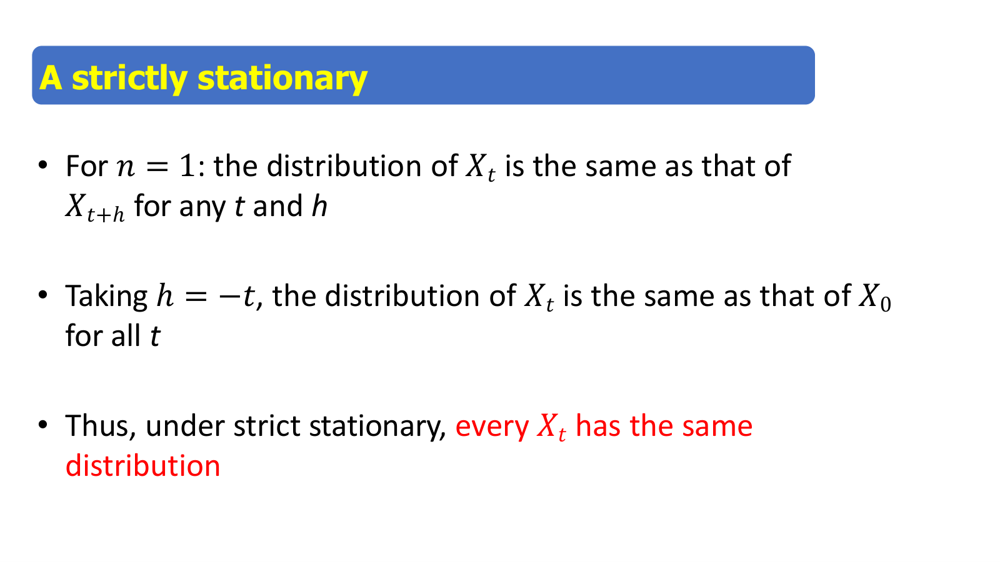
เมื่อ n = 1 การแจกแจงของ \(X_t\) เหมือนของ \(X_{t+h}\) ทุก t และ h ทุกจุดเวลาจึงมีการแจกแจงเดียวกัน ผลคือ \(E(X_t)\) และ \(\mathrm{Var}(X_t)\) คงที่ เพราะคำนวณจากการแจกแจงเดียวกัน
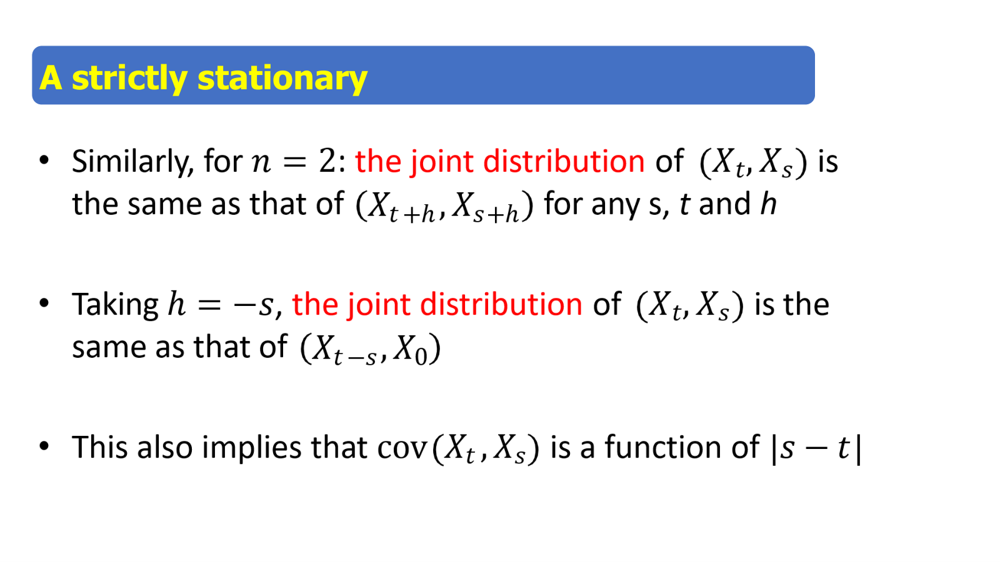
เมื่อ n = 2 การแจกแจงร่วมของ \((X_t,X_s)\) เหมือนของ \((X_{t+h},X_{s+h})\) เลือก h = −s จะเหมือนของ \((X_{t-s},X_0)\) ซึ่งขึ้นกับ t และ s ผ่านค่า t − s เท่านั้น covariance จึงขึ้นกับระยะห่างอย่างเดียว สองหน้านี้รวมกันได้ผลสามข้อ
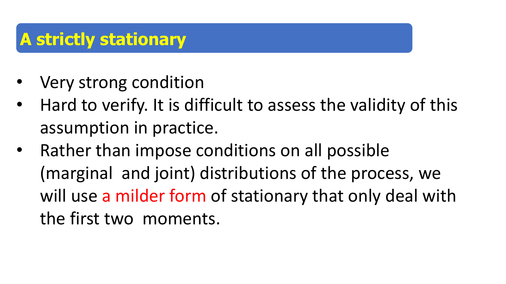
เงื่อนไขแบบเข้มตรวจได้ยากมาก เพราะต้องรู้การแจกแจงร่วมของทุกชุดของเวลา ขณะที่มีข้อมูลเส้นเดียว จึงใช้รูปแบบที่อ่อนลงซึ่งสนใจแค่ moment สองอันดับแรก ตามเหตุผลใน Lesson 1 หัวข้อ 7 ที่ว่าวิชานี้ระบุโมเดลด้วยค่าเฉลี่ย ความแปรปรวน และ covariance
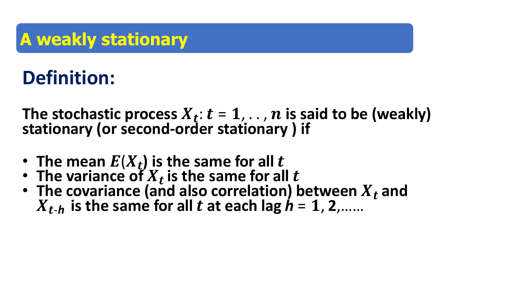
\(\{X_t\}\) เป็น weakly stationary (หรือ second-order stationary) ถ้า
สามข้อนี้คือผลสามข้อของแบบเข้มในหัวข้อ 5 แบบอ่อนจึงเก็บเฉพาะผลที่ต้องใช้ และทิ้งเงื่อนไขเรื่องการแจกแจงทั้งหมด
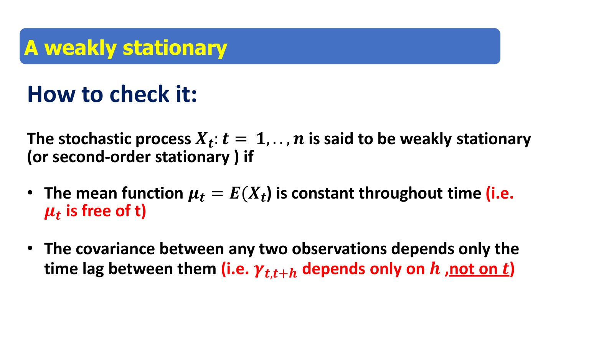
วิธีตรวจมีสองข้อ ให้จดตรงตามสไลด์36
เงื่อนไขความแปรปรวนคงที่รวมอยู่ในข้อสองแล้ว เพราะเมื่อ h = 0 ค่า \(\gamma(t,t)\) คือความแปรปรวน ซึ่งต้องไม่ขึ้นกับ t
ถ้ามี t อยู่ในผล สรุปว่าไม่นิ่งได้ทันที ถ้าเป็นค่าคงที่ (ไม่จำเป็นต้องเป็น 0) ไปขั้นต่อไป
ใช้เทคนิคนับ w ที่ตรงกันจาก Lesson 1 เริ่มจาก h = 0, 1, 2 ไปจนกว่าจะแน่ใจว่าที่เหลือเป็น 0 อย่าหยุดเร็ว (ดูข้อสอบเก่าในหัวข้อ 8)
ถ้า \(\gamma\) ขึ้นกับ h เท่านั้น สรุปว่านิ่ง ถ้ามี t ปนอยู่ สรุปว่าไม่นิ่ง
หาร \(\gamma(h)\) ทุกตัวด้วย \(\gamma(0)\)
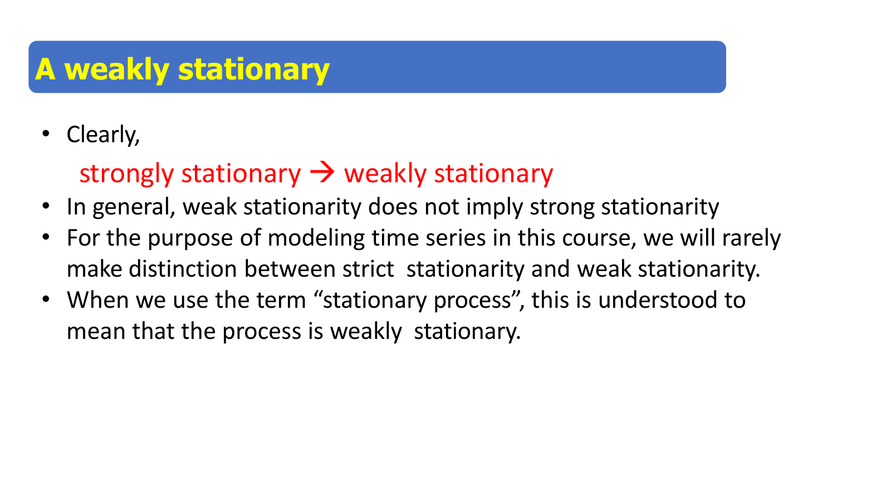
สองแบบสัมพันธ์กันทางเดียว
เพื่อความง่ายของวิชา ถ้า weakly stationary ก็ถือว่า stationary37 คำว่า stationary ในบทต่อ ๆ ไปจึงหมายถึงแบบอ่อน
ทำไมต้องฝึกกับโมเดลที่รู้สมการ ในชีวิตจริงไม่รู้ว่าข้อมูลมาจากโมเดลใด แต่ถ้าศึกษาแบบแผนของแต่ละโมเดลไว้ก่อน เมื่อข้อมูลจริงมีลักษณะคล้ายโมเดลใด ก็ใช้โมเดลนั้น38 เหมือนเรียนลักษณะของโรคจากตำราก่อน แล้วจึงไปวินิจฉัยคนไข้จริง
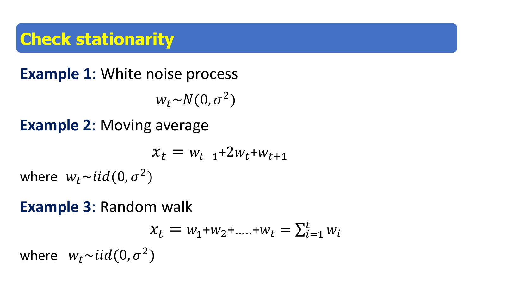
สไลด์ให้สามโมเดลโดยไม่แสดงวิธีทำ ทั้งสามใช้ขั้นตอนในหัวข้อ 6 และมีค่าเฉลี่ยเป็น 0 เหมือนกัน แต่ผลต่างกันชัด
| โมเดล | ผล |
|---|---|
| White noise | นิ่ง |
| ค่าเฉลี่ยถ่วงน้ำหนักสามจุด \(x_t=w_{t-1}+2w_t+w_{t+1}\) | นิ่ง |
| Random walk \(x_t=\sum_{i=1}^{t}w_i\) | ไม่นิ่ง |
\(E(w_t)=0\) ไม่ขึ้นกับ t
\(\gamma(0)=\sigma^2\) และ \(\gamma(h)=0\) เมื่อ h ≠ 0 ขึ้นกับ h เท่านั้น39
\(E(x_t)=0+2(0)+0=0\)
\(\mathrm{cov}(w_{t-1}+2w_t+w_{t+1},\ w_{t-1}+2w_t+w_{t+1})=\sigma^2+4\sigma^2+\sigma^2=6\sigma^2\) ดึงสัมประสิทธิ์ 2 กับ 2 ออกมาเป็น \(4\sigma^2\)40
\(x_{t+1}=w_t+2w_{t+1}+w_{t+2}\) ตัวที่ตรงกันคือ \(w_t\) (สัมประสิทธิ์ 2 กับ 1) และ \(w_{t+1}\) (1 กับ 2): \(\gamma(1)=2\sigma^2+2\sigma^2=4\sigma^2\)
\(x_{t+2}=w_{t+1}+2w_{t+2}+w_{t+3}\) ตัวที่ตรงกันมีแค่ \(w_{t+1}\) (1 กับ 1): \(\gamma(2)=\sigma^2\) ไม่ใช่ \(2\sigma^2\) ที่ได้จากการเดาว่า 6, 4, 2 ลดทีละ 2
ไม่มีตัวที่ตรงกัน: \(\gamma(h)=0\)
\(\rho(0)=1\), \(\rho(1)=4/6=2/3\), \(\rho(2)=1/6\), \(\rho(h)=0\) เมื่อ \(|h|\ge3\)
เห็น 6 แล้ว 4 จึงเดาว่าต่อไปเป็น 2 คือผิด ค่าจริงคือ \(\sigma^2\) ต้องคูณกระจายจริง41 อย่าเชื่อเพียงเพราะฟังดูมีเหตุผล42 วิธีกันพลาดคือเขียนสองก้อนเรียงกันเป็นตาราง
| \(w_{t-1}\) | \(w_t\) | \(w_{t+1}\) | \(w_{t+2}\) | \(w_{t+3}\) | ผลคูณที่ตรงกัน | |
|---|---|---|---|---|---|---|
| \(x_t\) | 1 | 2 | 1 | \(1+4+1=6\) | ||
| \(x_{t+1}\) | 1 | 2 | 1 | \(2\cdot1+1\cdot2=4\) | ||
| \(x_{t+2}\) | 1 | 2 | 1 | \(1\cdot1=1\) |
\(E(x_t)=0\) ไม่ขึ้นกับ t ผ่านข้อแรก
w ทั้ง t ตัวอิสระต่อกัน: \(\mathrm{Var}(x_t)=t\sigma^2\)
\(x_t\) และ \(x_{t+h}\) มี w ร่วมกัน t ตัว: \(\gamma(t,t+h)=t\sigma^2\) มี t อยู่ในผล
ตัวอย่างที่ 3 แสดงว่าต้องตรวจครบสองข้อ ค่าเฉลี่ยคงที่อย่างเดียวไม่พอ random walk ไม่มี trend ที่แน่นอน แต่ยิ่งเวลาผ่านไป ค่ายิ่งเดินออกห่างจากจุดเริ่มได้ไกลขึ้น เหมือนคนเมาที่ไม่ได้ตั้งใจเดินไปทางไหน แต่ยิ่งเดินนาน ยิ่งมีโอกาสอยู่ห่างจากเสาไฟต้นแรก
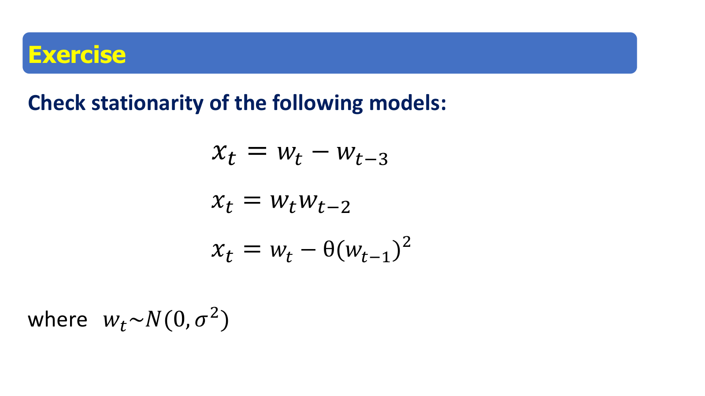
สไลด์ให้ตรวจสามโมเดล โดย \(w_t\sim N(0,\sigma^2)\)
| ข้อ | โมเดล | หมายเหตุ |
|---|---|---|
| (a) | \(x_t=w_t-w_{t-3}\) | ข้อสอบเก่า |
| (b) | \(x_t=w_tw_{t-2}\) | การบ้าน |
| (c) | \(x_t=w_t-\theta(w_{t-1})^2\) | ยากที่สุด มีเฉลยในห้อง |
\(E(x_t)=0-0=0\)
\(\sigma^2+(-1)^2\sigma^2=2\sigma^2\)
\(x_{t+1}=w_{t+1}-w_{t-2}\) และ \(x_{t+2}=w_{t+2}-w_{t-1}\) ไม่มีตัวที่ตรงกับ \(w_t,w_{t-3}\) จึงเป็น 0 ทั้งคู่
\(x_{t+3}=w_{t+3}-w_t\) ตัวที่ตรงกันคือ \(w_t\) ซึ่งมีสัมประสิทธิ์ +1 ใน \(x_t\) และ −1 ใน \(x_{t+3}\): \(\gamma(3)=\mathrm{cov}(w_t,-w_t)=-\sigma^2\)
ไม่มีตัวที่ตรงกัน: 0
ถ้าไม่รู้ว่า moment คืออะไร ข้อนี้จะทำไม่ได้ตั้งแต่ต้น46 moment ลำดับที่ k คือ \(E(W^k)\) สำหรับ \(W\sim N(\mu,\sigma^2)\)47
| Moment | รูปทั่วไป | เมื่อ μ = 0 |
|---|---|---|
| \(E(W)\) | \(\mu\) | 0 |
| \(E(W^2)\) | \(\mu^2+\sigma^2\) | \(\sigma^2\) |
| \(E(W^3)\) | \(\mu^3+3\mu\sigma^2\) | 0 |
| \(E(W^4)\) | \(\mu^4+6\mu^2\sigma^2+3\sigma^4\) | \(3\sigma^4\) |
ผลที่ใช้บ่อย
\(E(x_t)=E(w_t)-\theta E(w_{t-1}^2)=0-\theta\sigma^2=-\theta\sigma^2\) ไม่ใช่ 048 แต่เป็นค่าคงที่ ไม่มี t จึงผ่านข้อแรก
\(w_t\) กับ \(w_{t-1}^2\) อยู่คนละเวลาจึงอิสระต่อกัน: \(\mathrm{Var}(x_t)=\mathrm{Var}(w_t)+\theta^2\mathrm{Var}(w_{t-1}^2)=\sigma^2+\theta^2(3\sigma^4-\sigma^4)=\sigma^2+2\theta^2\sigma^4\)
\(x_{t+1}=w_{t+1}-\theta w_t^2\) คู่ที่มีตัวร่วมคือ \(w_t\) ใน \(x_t\) กับ \(-\theta w_t^2\) ใน \(x_{t+1}\): \(\gamma(1)=-\theta\,\mathrm{cov}(w_t,w_t^2)=-\theta[E(w_t^3)-E(w_t)E(w_t^2)]=-\theta[0-0]=0\)
ไม่มีตัวร่วม: 0 คนละจุดเวลาถือว่า covariance เป็นศูนย์ แม้อยู่ในฟังก์ชันที่ต่างกัน49
สองจุดที่ทำให้ข้อ (c) ยาก
ควิซครั้งแรกอาจออกแนวนี้ คล้ายการบ้านและไม่ยากกว่านั้น50
\(w_t\) กับ \(w_{t-2}\) อิสระต่อกัน: \(E(x_t)=E(w_t)E(w_{t-2})=0\)
\(E(x_t^2)=E(w_t^2)E(w_{t-2}^2)=\sigma^2\cdot\sigma^2=\sigma^4\)
\(\gamma(h)=E(w_tw_{t-2}w_{t+h}w_{t+h-2})\) ถ้ามี w ตัวใดปรากฏครั้งเดียวในผลคูณ ค่าคาดหมายของตัวนั้นซึ่งเป็น 0 จะแยกออกมาคูณ ทำให้ทั้งหมดเป็น 0 เช่น h = 2: \(w_t^2w_{t-2}w_{t+2}\) มี \(w_{t-2}\) และ \(w_{t+2}\) ปรากฏครั้งเดียว จึงได้ 0
ผลของข้อ (b) หน้าตาเหมือน white noise ทุกประการ ทั้งที่ \(x_t\) กับ \(x_{t+2}\) ใช้ \(w_t\) ร่วมกัน จึงไม่เป็นอิสระต่อกัน เป็นอีกตัวอย่างของ covariance เป็น 0 แต่ไม่อิสระ ตรงกับคำเตือนบนสไลด์ Lesson 1 หน้า 28
Exercise 1 ที่แจกในวิชามีแปดข้อ
\(E(X_t)=0\)
\((1^2+1.2^2+1.6^2)\sigma^2=(1+1.44+2.56)(0.25)=5(0.25)=1.25\)
\(X_{t+1}=w_{t+1}-1.2w_t-1.6w_{t-1}\) ตัวที่ตรงกัน: \(w_t\) (1 กับ −1.2) และ \(w_{t-1}\) (−1.2 กับ −1.6): \([(1)(-1.2)+(-1.2)(-1.6)](0.25)=(-1.2+1.92)(0.25)=0.18\)
\(X_{t+2}=w_{t+2}-1.2w_{t+1}-1.6w_t\) ตัวที่ตรงกัน: \(w_t\) (1 กับ −1.6): \(-1.6(0.25)=-0.4\)
0
\(\rho(1)=0.18/1.25=0.144\), \(\rho(2)=-0.4/1.25=-0.32\) ตรวจด้วย R: ARMAacf(ma = c(-1.2, -1.6), lag.max = 3) ได้ 1, 0.144, −0.320, 0
t คู่: \(E(Z_t)=0\) t คี่: \((E(Z_{t-1}^2)-1)/\sqrt2=(1-1)/\sqrt2=0\) เท่ากันทุก t
t คู่: 1 t คี่: \(\mathrm{Var}(Z^2)/2=(3-1)/2=1\) เท่ากันทุก t
ทั้งคู่ใช้ \(Z_{t-1}\): \(\mathrm{cov}(Z_{t-1},(Z_{t-1}^2-1)/\sqrt2)=E(Z^3)/\sqrt2=0\)
ใช้ Z คนละตัว จึงอิสระต่อกัน covariance = 0
ข้อ 1 ตอบสไลด์หน้า 32 ได้ตรงที่สุด: weak ไม่จำเป็นต้องให้ strong ค่าเฉลี่ยและ covariance เหมือนกันทุกเวลา แต่หน้าตาการแจกแจงสลับไปมาระหว่างเวลาคู่กับคี่ จำลอง 1,000 จุดใน R ได้ค่าเฉลี่ย 0.018 ความแปรปรวน 0.968 และ ACF ที่ lag 1 เท่ากับ 0.062 ซึ่งอยู่ในเส้นขอบ 0.063
\(E(X_t)=\cos(ct)E(w_0)=0\) ทุก t
\(\cos(ct)\) เป็นค่าคงที่ (ไม่สุ่ม) ส่วนที่สุ่มคือ \(w_0\) ตัวเดียว: \(\gamma(t,t+h)=\cos(ct)\cos(c(t+h))\,\mathrm{Var}(w_0)=\sigma^2\cos(ct)\cos(c(t+h))\)
ใช้ \(\cos A\cos B=\tfrac12[\cos(A-B)+\cos(A+B)]\): \(\gamma(t,t+h)=\tfrac{\sigma^2}2[\cos(ch)+\cos(c(2t+h))]\) พจน์หลังมี t เช่น \(\mathrm{Var}(X_t)=\sigma^2\cos^2(ct)\) เปลี่ยนตาม t
| โมเดล | Mean | \(\gamma(0)\) | \(\gamma(h)\) ที่ไม่เป็น 0 | Stationary |
|---|---|---|---|---|
| White noise | 0 | \(\sigma^2\) | ไม่มี | ใช่ |
| \(w_{t-1}+2w_t+w_{t+1}\) | 0 | \(6\sigma^2\) | \(\gamma(1)=4\sigma^2\), \(\gamma(2)=\sigma^2\) | ใช่ |
| Random walk | 0 | \(t\sigma^2\) | \(t\sigma^2\) | ไม่ |
| \(w_t-w_{t-3}\) | 0 | \(2\sigma^2\) | \(\gamma(3)=-\sigma^2\) | ใช่ |
| \(w_tw_{t-2}\) | 0 | \(\sigma^4\) | ไม่มี | ใช่ |
| \(w_t-\theta w_{t-1}^2\) | \(-\theta\sigma^2\) | \(\sigma^2+2\theta^2\sigma^4\) | ไม่มี | ใช่ |
| \(w_t-1.2w_{t-1}-1.6w_{t-2}\) | 0 | 1.25 | \(\gamma(1)=0.18\), \(\gamma(2)=-0.4\) | ใช่ |
| \(w_0\cos(ct)\) | 0 | \(\sigma^2\cos^2(ct)\) | ขึ้นกับ t | ไม่ |
ภาคทฤษฎีของช่วงต้นวิชามีราว 3 ส่วน ต่อจากนี้เป็น data analysis51 Lesson 3 จึงเปลี่ยนจากโมเดลที่รู้สมการ ไปเป็นการประมาณค่าเหล่านี้จากข้อมูลจริง
ข้อ "นิ่งหรือไม่" ออกในข้อสอบปลายภาคทุกชุดที่มี และในชุดล่าสุด (2025) เป็นข้อแรกของข้อสอบ อาจารย์บอกให้ยึดชุดล่าสุดเป็นหลัก ส่วนเรื่องวัดความแม่นยำ ปี 2025 ใช้ RMSE บน test set เป็นคะแนนก้อนใหญ่ที่สุดของภาค R (8 คะแนนในข้อ 5g) เวลาสอบประมาณ 4.5 นาทีต่อคะแนน
| ข้อสอบ | โจทย์ (สรุปความ) | คะแนน | เวลาที่ควรใช้ | เฉลย |
|---|---|---|---|---|
| Final 2025 ข้อ 1 | \(X_t=w_tw_{t-1}\) นิ่งหรือไม่ | 5 | ~20 นาที | ข้อ ก |
| Practice Final 1 ข้อ 1 | \(X_t=-2t+w_t+0.5w_{t-1}\) ไม่นิ่ง แต่ \(\nabla X_t\) นิ่งหรือไม่ | 20 | ~20 นาที | ข้อ ข |
| Practice Final 1 ข้อ 6 | detrending: \(Y_t=7-3t+X_t\) เมื่อ \(E(X_t)=3t\) | 5 | ~5 นาที | ข้อ ค |
| Final 2025 ข้อ 5g | แบ่ง train/test ตามแถว แล้วหา RMSE บน test set ของ 4 โมเดล | 8 | ~35 นาที | ข้อ ง |
| Final 2025 ข้อ 5e | เทียบ MSE ของ auto.arima กับ ets ด้วย time series cross-validation | 2 | ~10 นาที | Lesson 10 (tsCV) |
| กับดักที่พบในข้อสอบเก่า | วิธีหลบ |
|---|---|
| ผลคูณ \(w_tw_{t-1}\) ดูเหมือนไม่เชิงเส้นจนคิดว่าไม่นิ่ง | นิ่งได้ ให้คำนวณจริง เพราะ independence ทำให้แยก expectation ของผลคูณได้ |
| uncorrelated ทุก lag แล้วสรุปว่าเป็น iid | ไม่จริง ต้องตรวจความสัมพันธ์ของ \(X_t^2\) ด้วย (ข้อ ก ส่วนท้าย) |
| mean ไม่เป็น 0 แล้วคิดว่าไม่นิ่ง | นิ่งได้ ขอแค่ mean ไม่ขึ้นกับ t เช่น \(E(\nabla X_t)=-2\) |
| หยุดไล่ γ(h) ที่ lag ที่เป็น 0 ตัวแรก | ต้องไล่จนถึงระยะห่างมากที่สุดในสมการ (กับดักของ \(w_t-w_{t-3}\) ในหัวข้อ 8) |
Mean: \(w_t\) กับ \(w_{t-1}\) อิสระกัน จึงได้ \(E(X_t)=E(w_t)E(w_{t-1})=0\) ไม่ขึ้นกับ t
Variance: \(\gamma(0)=E(w_t^2w_{t-1}^2)=E(w_t^2)E(w_{t-1}^2)=\sigma^4\) มีค่าจำกัด
γ(1): \(E(X_tX_{t+1})=E(w_tw_{t-1}\cdot w_{t+1}w_t)=E(w_t^2)E(w_{t-1})E(w_{t+1})=\sigma^2\cdot0\cdot0=0\)
γ(h), |h| ≥ 2: \(E(w_tw_{t-1}w_{t+h}w_{t+h-1})\) มี w สี่ตัวที่ต่างกันหมด จึงเป็น 0
สรุป: mean = 0 คงที่ \(\gamma(0)=\sigma^4\) และ \(\gamma(h)=0\) เมื่อ \(h\ne0\) จึงเป็น weakly stationary และเป็น white noise ด้วย (variance \(\sigma^4\))
ส่วนเพิ่มที่ทำให้คำตอบโดดเด่น: \(X_t\) ไม่ใช่ iid เพราะ \(\mathrm{cov}(X_t^2,X_{t+1}^2)=E(w_{t-1}^2w_t^4w_{t+1}^2)-\sigma^4\cdot\sigma^4=3\sigma^8-\sigma^8=2\sigma^8\ne0\) ค่าที่ห่างกัน 1 lag ไม่สัมพันธ์กัน แต่ขนาดของมันสัมพันธ์กัน ซึ่งเป็นแนวคิดเดียวกับ ARCH/GARCH ที่สอนใน Class 11 (ตรวจด้วยการจำลองแล้ว: \(\hat\rho(1)\approx0\) และ covariance ของกำลังสองตรงกับ \(2\sigma^8\))
(a) \(E(X_t)=-2t\) ขึ้นกับ t จึงไม่นิ่ง ข้อนี้ข้อเดียวพอ
(b) \(\nabla X_t=[-2t+w_t+0.5w_{t-1}]-[-2(t-1)+w_{t-1}+0.5w_{t-2}]=-2+w_t-0.5w_{t-1}-0.5w_{t-2}\)
Mean: \(E(\nabla X_t)=-2\) คงที่ (ไม่เป็น 0 ก็นิ่งได้)
สัมประสิทธิ์ของ \(w_t,w_{t-1},w_{t-2}\) คือ \(1,-0.5,-0.5\)
\(\gamma(0)=(1+0.25+0.25)\sigma^2=1.5\sigma^2\)
\(\gamma(1)=[1\cdot(-0.5)+(-0.5)(-0.5)]\sigma^2=-0.25\sigma^2\)
\(\gamma(2)=[1\cdot(-0.5)]\sigma^2=-0.5\sigma^2\)
\(\gamma(h)=0\) เมื่อ \(|h|\ge3\)
สรุป: mean คงที่และ γ ขึ้นกับ h อย่างเดียว \(\nabla X_t\) จึงนิ่ง ได้ \(\rho(1)=-1/6\) และ \(\rho(2)=-1/3\) (ตรวจด้วยการจำลองแล้ว) ข้อนี้คือเหตุผลที่ differencing กำจัด linear trend ได้ ดูต่อใน Lesson 3 หัวข้อ 9
\(E(Y_t)=7-3t+3t=7\) คงที่
\(\mathrm{cov}(Y_t,Y_{t+h})=\mathrm{cov}(X_t,X_{t+h})=\gamma_h\) เพราะ \(7-3t\) เป็นค่าคงที่ (ไม่สุ่ม) และการบวกค่าคงที่ไม่เปลี่ยน covariance
สรุป: mean คงที่และ covariance ขึ้นกับ h อย่างเดียว จึงนิ่ง นี่คือ detrending (Lesson 3 หัวข้อ 7) ที่เอาเส้น trend ที่รู้รูปแบบออก
rain.txt โจทย์ให้แบ่ง train = แถว 1–36 และ test = แถว 37–47 แล้ว fit auto.arima(stepwise = TRUE, approximation = FALSE) บน train และหา RMSE บน test เขียนโค้ดให้ถูกลำดับ และระบุว่าคำตอบที่ต้องกรอกคืออะไรlibrary(forecast)
rain <- read.table("rain.txt", header = TRUE)
tr <- ts(rain$rain[1:36], start = c(2022, 1), frequency = 12)
te <- ts(rain$rain[37:47], start = c(2025, 1), frequency = 12)
fit <- auto.arima(tr, stepwise = TRUE, approximation = FALSE)
fit # ชื่อโมเดลที่ต้องกรอกในตาราง
fc <- forecast(fit, h = length(te))
accuracy(fc, te) # อ่านแถว "Test set" คอลัมน์ RMSEผลที่รันจริง: ได้ ARIMA(0,0,0)(0,1,0)[12] with drift และ RMSE บน test = 4.846 (ตรวจด้วยสูตร \(\sqrt{\text{mean}((te-\hat y)^2)}\) ได้ค่าเดียวกัน)
สิ่งที่ต้องระวังจากบทนี้:
frequency = 12 ก่อน ถ้าลืม auto.arima จะไม่เห็น seasonality และได้โมเดลอื่นaccuracy(พยากรณ์, ค่าจริง) ต้องเอาค่าพยากรณ์ขึ้นก่อน ถ้าสลับ RMSE และ MAE ยังเท่าเดิม (4.846) แต่ ME กลับเครื่องหมายจาก +1.071 เป็น −1.071 และ MAPE เปลี่ยนจาก 7.181 เป็น 7.025 (กับดักเดียวกับหัวข้อ 3)แบบฝึกแบ่งเป็นห้ากลุ่ม
ไฟล์ข้อมูล temp.txt และ accuracy.txt อยู่ในโฟลเดอร์ CLASS 2 บน myCourseVille
\(E(x_t)=0+\theta E(w_{t-1}^2)=\theta\sigma^2\) คงที่
\(\gamma(0)=\mathrm{Var}(w_t)+\theta^2\mathrm{Var}(w_{t-1}^2)=\sigma^2+\theta^2(3\sigma^4-\sigma^4)=\sigma^2+2\theta^2\sigma^4\)
\(\gamma(1)=\mathrm{cov}(w_t+\theta w_{t-1}^2,\ w_{t+1}+\theta w_t^2)=\theta\,\mathrm{cov}(w_t,w_t^2)=\theta[E(w^3)-E(w)E(w^2)]=0\)
\(\gamma(h)=0\) เมื่อ h ≥ 2 เพราะไม่มีตัวร่วม สรุป stationary
\(E(x_t)=0\)
\(\gamma(0)=(4+1)\sigma^2=5\sigma^2\)
\(\gamma(1)\): \(x_{t+1}=2w_{t+1}+w_{t-1}\) ไม่มีตัวร่วมกับ \(w_t,w_{t-2}\) จึงเป็น 0
\(\gamma(2)\): \(x_{t+2}=2w_{t+2}+w_t\) ตัวร่วมคือ \(w_t\) (2 กับ 1) ได้ \(2\sigma^2\)
\(\gamma(h)=0\) เมื่อ \(|h|\ge3\) ACF: \(\rho(1)=0\), \(\rho(2)=2/5\) สรุป stationary สังเกตว่า lag 1 เป็น 0 แต่ lag 2 ไม่เป็น 0 จึงต้องไล่ทุก lag จนถึงระยะห่างสูงสุดในสมการ
n = 1: การแจกแจงของ \(X_t\) เหมือนของ \(X_{t+h}\) ทุก h ทุกเวลาจึงมีการแจกแจงเดียวกัน \(E(X_t)\) และ \(\mathrm{Var}(X_t)\) จึงคงที่
n = 2: การแจกแจงร่วมของ \((X_t,X_s)\) เหมือนของ \((X_{t+h},X_{s+h})\) เลือก h = −s ได้การแจกแจงของ \((X_{t-s},X_0)\) ซึ่งขึ้นกับ t − s เท่านั้น covariance ที่คำนวณจากการแจกแจงนี้จึงขึ้นกับ \(|t-s|\) เท่านั้น
ข้อมูลจริงมีค่าเดียวต่อเวลา ถ้าค่าเฉลี่ยและ covariance เปลี่ยนทุกเวลา จะประมาณค่าเหล่านั้นไม่ได้ เมื่อนิ่ง กติกาไม่เปลี่ยนตามเวลา ทุกจุดช่วยกันประมาณค่าชุดเดียว ทำให้ model ง่ายและพยากรณ์ได้ (predictable) ทฤษฎีส่วนใหญ่จึงสร้างบนอนุกรมที่นิ่ง
กลยุทธ์: ดึงส่วนที่ไม่นิ่งออกก่อน (trend ด้วย detrending หรือ differencing, ความแปรปรวนด้วย log) นำส่วนที่นิ่งไปสร้างโมเดล แล้วปรับกลับทีหลัง
เพื่อนรันคำสั่งตามสไลด์และได้ผลนี้ แล้วรายงานว่า "โมเดลพยากรณ์ต่ำกว่าค่าจริงเฉลี่ย 0.33 หน่วย MAPE 15.8%" จงอธิบายว่าถูกหรือผิด เพราะอะไร
> test <- ts(read.table("accuracy.txt", h=T)) # คอลัมน์ 1 = data, 2 = forecast
> accuracy(test[,1], test[,2])
ME RMSE MAE MPE MAPE
Test set 0.3333333 4.434712 3.666667 -1.666443 15.799ผิด accuracy(f, x) รับค่าพยากรณ์ก่อน แต่คำสั่งนี้ส่งค่าจริงไปเป็นตัวแรก error จึงกลายเป็น forecast − data เครื่องหมายของ ME กลับ และ MAPE หารด้วยค่าพยากรณ์แทนค่าจริง
คำสั่งที่ถูกคือ accuracy(test[,2], test[,1]) ได้ ME = −0.333 (พยากรณ์สูงกว่าค่าจริงเฉลี่ย 0.33) และ MAPE = 15.73% ตรงกับ Excel ส่วน RMSE 4.435 และ MAE 3.667 ถูกทั้งสองแบบ
จาก output นี้ train และ test มีกี่จุด ครอบคลุมปีใด
> new_temperature <- ts(read.table("temp.txt"), start = 1856)
> length(new_temperature); end(new_temperature)
[1] 142
[1] 1997 1
> nValid <- 36; nTrain <- length(new_temperature) - nValidnTrain = 142 − 36 = 106 จุด ปี 1856 ถึง 1856 + 106 − 1 = 1961
test 36 จุด ปี 1962 ถึง 1997
แบ่ง temp.txt เป็น train และ test ตามสไลด์ แล้วลองพยากรณ์ test ด้วยสองวิธีง่าย ๆ (ก) ใช้ค่าเฉลี่ยของ train (ข) ใช้ค่าสุดท้ายของ train จากนั้นเทียบ RMSE, MAE และ ME ของสองวิธี วิธีไหนดีกว่า และ ME บอกอะไร
library(forecast)
x <- ts(read.table("temp.txt"), start = 1856)
tr <- window(x, end = 1961); te <- window(x, start = 1962)
fa <- rep(mean(tr), 36) # (ก) ค่าเฉลี่ย train
fb <- rep(tail(tr, 1), 36) # (ข) ค่าสุดท้ายของ train
accuracy(fa, te); accuracy(fb, te)(ก) ค่าเฉลี่ย train = −0.235 RMSE 0.349 MAE 0.305 ME 0.305 (ข) ค่าสุดท้าย = 0.030 RMSE 0.174 MAE 0.141 ME 0.039
วิธี (ข) ดีกว่าทุกตัววัด เพราะข้อมูลมี trend ขาขึ้น ค่าเฉลี่ยของ train ทั้ง 106 ปีจึงต่ำกว่าช่วง test มาก ME ของวิธี (ก) เป็นบวก 0.305 เกือบเท่า MAE แปลว่าพยากรณ์ต่ำกว่าจริงเกือบทุกปี ซึ่งเป็นอาการของโมเดลที่ไม่จับ trend ข้อมูลนี้ไม่นิ่ง จึงต้องดึง trend ออกก่อน (Lesson 3)
จำลองโมเดลของ Exercise 1 ข้อ 2 แล้วเทียบ ACF จากข้อมูลกับค่าทางทฤษฎีที่คำนวณในหัวข้อ 8
set.seed(11)
w <- rnorm(2002, 0, 0.5) # sigma^2 = 0.25
x <- w[3:2002] - 1.2*w[2:2001] - 1.6*w[1:2000]
acf(x, lag.max = 3, plot = FALSE); var(x)
ARMAacf(ma = c(-1.2, -1.6), lag.max = 3) # ค่าทางทฤษฎีACF จากข้อมูล lag 0–3: 1.000 0.149 -0.312 0.005 var(x) = 1.233 ทฤษฎี (ARMAacf): 1.000 0.144 -0.320 0.000 γ(0) = 1.25
ค่าจากข้อมูล 2,000 จุดใกล้ค่าทางทฤษฎีทุก lag lag 3 ควรอยู่ในเส้นขอบ \(2/\sqrt{2000}=0.045\) สรุปว่าการคำนวณมือถูก และโมเดลนิ่ง ACF ตัดหลัง lag 2
window()accuracy(f, x) ให้ถูกลำดับบทถัดไป: Lesson 3 — ประมาณ ACF จากข้อมูล, correlogram, ADF test, detrending และ differencing
ตัวเลขยกเล็กในเนื้อหาชี้มาที่รายการนี้ แต่ละรายการระบุคลาสและนาทีของคลิป พร้อมถ้อยคำในคลิปเมื่อมี
| หน้า | เนื้อหา | สอนที่ |
|---|---|---|
| 1 | ปก Performance Evaluation | etc — ปก |
| 2–4 | ทำไมต้องประเมิน, cross-validation, overfitting | หัวข้อ 1 |
| 5–12 | Data partitioning, fixed, roll-forward, R-codes | หัวข้อ 2 |
| 13–17 | Forecast errors, ตาราง Excel, R-codes | หัวข้อ 3 |
| 18 | หน้าคั่น Stationary Time Series | etc — หน้าคั่น |
| 19–23 | Consistency, stationarity, why important, types | หัวข้อ 4 |
| 24–29 | Strictly stationary, new notation | หัวข้อ 5 |
| 30–32 | Weakly stationary | หัวข้อ 6 |
| 33 | Check stationarity สามตัวอย่าง | หัวข้อ 7 |
| 34 | Exercise สามโมเดล | หัวข้อ 8 |
| แหล่ง | ช่วงที่ใช้ | หัวข้อ |
|---|---|---|
| Class 2 | 0:40–1:16 performance evaluation และ R, 1:47–2:44 stationarity และโจทย์ | 1–8 |
| Class 4 | 0:15, 0:21 ห้ามใช้ test set และควิซ RMSE/MAE | 1, 3 |
| Exercise 1 (CLASS 2) | ข้อ 1, 2, 3, 4 | 7, 8 |
| Forecast Error Example.xlsx, accuracy.txt, temp.txt, R_codes (CLASS 2) | ทั้งไฟล์ | 2, 3, 9 |